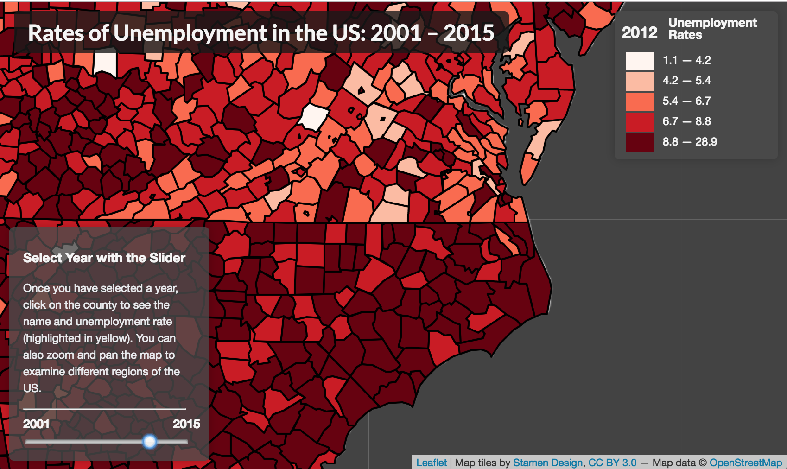
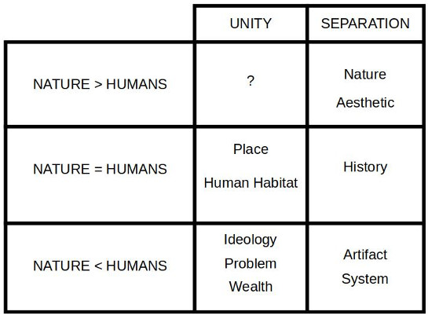

Direct Interaction
Narrative Web Maps and Explicit Bias
Joe Blankenship
-
Rich Donohue
-
NewMapsPlus
Kenya Education - 2014
Bitcoin Labor
Direct Interaction
the control of web map form and function resulting in a user interaction intended by the designer and developed in a way that is transparent and explicitly ethical
Form and Function
Web Maps for Users

Map Creator Intent
Effects of Viewing
Simplified Narrative Approach
Interaction
Encompassing Design
Modes of Audience Viewing
Language and Design
Grammar for Maps
Code to Language
Design to Language
Language to Direction
Directed Interaction
Intent
Meaning
Message
User Engagement
Engagement and Feedback
Map as Social Product
Perspective and Position

Dialogue via Map
Process of Engagement
Processes of Directed Interaction
Optimal Transparency
Explicit Bias
Simple UX/UI
Explicit Ethics
Conclusion
NewMapsPlus